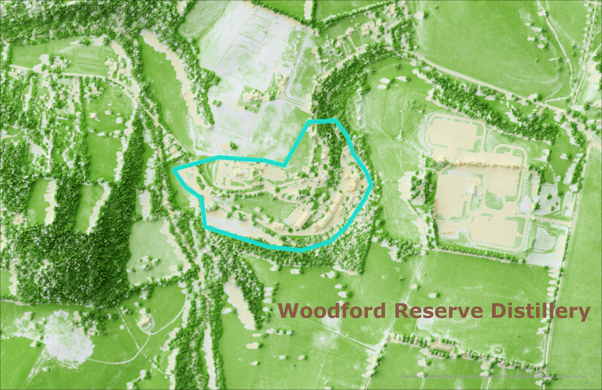

Lets Explore The Campus of The Woodford Reserve Bourbon Distillery!
The maps I have created for this project serve as a more detailed look at the Woodford Reserve Bourbon Distillery campus. The first map is a 3D map showing the topography of the distillery campus using 10ft contour lines. The second map is a 2D map showing a more detailed look at the vegetation present on the distillery campus.
History
The Woodford Reserve Bourbon Distillery was created in 1812 in Woodford County Kentucky. Before it became known as the Woodford Reserve Distillery, it was formely known as the Old Oscar Pepper Distillery and later the Labrot & Graham Distillery. It is about eight miles from the town of Versailles in north-central Kentucky, off U.S. Route 60 between Interstate 64 and Versailles. What's unique about this distillery is that it is very small, yet produces one of the highest rated bourbons in the world and is now the main sponsor of the Kentucky Derby!
This is the 3D map showing the topography of the Woodford Reserve Distillery campus using 10ft contour lines. I like this map because it is interactive and is really useful for understanding the elevation of the area. Enlarge map
This is the 2D map showing the vegetation of the Woodford Reserve Distillery campus. The areas in the lighter colored green are grassy areas or open fields, the darker green colored areas are trees or areas of dense vegetation, and the lighter tan colored areas are buildings or roadways.